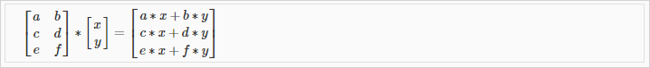
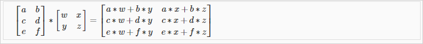

1.3. Linear Algebra Review
1.3.1 Vector
A vector is a matrix with one column and many rows:
So vectors are a subset of matrices. The above vector is a 4 x 1 matrix.
notations
4 demensional Vector 이다.
refers to the element in the ith row and jth column of matrix A.- A vector with 'n' rows is referred to as an 'n'-dimensional vector.
refers to the element in the ith row of the vector.- In general, all our vectors and matrices will be 1-indexed. Note that for some programming languages, the arrays are 0-indexed.
- Matrices are usually denoted by uppercase names while vectors are lowercase.
- "Scalar" means that an object is a single value, not a vector or matrix.
refers to the set of scalar real numbers.
refers to the set of n-dimensional vectors of real numbers.
Octave/Matlab commands
% The ; denotes we are going back to a new row.
A = [1, 2, 3; 4, 5, 6; 7, 8, 9; 10, 11, 12]
% Initialize a vector
v = [1;2;3]
% Get the dimension of the matrix A where m = rows and n = columns
[m,n] = size(A)
% You could also store it this way
dim_A = size(A)
% Get the dimension of the vector v
dim_v = size(v)
% Now lets index into the 2nd row 3rd column of matrix A
A_23 = A(2,3)
1.3.2 Matrix addition and substriction and 스칼라곱
In scalar multiplication, we simply multiply every element by the scalar value:
In scalar division, we simply divide every element by the scalar value:
Octave/Matlab commands
% Initialize matrix A and B
A = [1, 2, 4; 5, 3, 2]
B = [1, 3, 4; 1, 1, 1]
% Initialize constant s
s = 2
% See how element-wise addition works
add_AB = A + B
% See how element-wise subtraction works
sub_AB = A - B
% See how scalar multiplication works
mult_As = A * s
% Divide A by s
div_As = A / s
% What happens if we have a Matrix + scalar?
add_As = A + s
1.3.3. Matrix * Vector Multiplication

m x n matrix X n x 1 vector => m x 1 vector
- 사례
행렬곱을 사용하면 모든 집값을 편하게 예측할수 있다. 각 x변수에 해당하는 y값을 한번에 계산할 수 있다.

Hypothesis function 가 있다고 가정하고 내가 가진 집크기가 왼쪽의 4개의 값을 가지고 있을때 가격을 예측해보자. 행렬곱을 이용해서 한번에 계산할 수 있다.
우리는 이런 연산을 다른 모델에서 regression 을 개발하기 위한 연산자로 잘 활용할 수 있다.
Octave/Matlab commands
% Initialize matrix A
A = [1, 2, 3; 4, 5, 6;7, 8, 9]
% Initialize vector v
v = [1; 1; 1]
% Multiply A * v
Av = A * v
1.3.4. Matrix * Matrix Multiplication

An m x n matrix multiplied by an n x o matrix results in an m x o matrix
행렬곱은 여러개의 계산식을 하나의 행렬곱셈으로 표현하게 해준다.
- 사례
이번엔 여러개의 집크기에 대한 가격 예측을 할때, 여러개의 가설함수를 있다고 하자. matrix곱을 사용하면 한번에 계산 할 수 있다.
결과 matrix의 열이 각 집크기에 상응하는 예측 가격이다.
Octave/Matlab commands
% Initialize a 3 by 2 matrix
A = [1, 2; 3, 4;5, 6]
% Initialize a 2 by 1 matrix
B = [1; 2]
% We expect a resulting matrix of (3 by 2)*(2 by 1) = (3 by 1)
mult_AB = A*B
1.3.5. Matrix Multiplication Properties
- 교환법칙 X
Matrices are not commutative: A∗B≠B∗A 결합법칙 O
Matrices are associative: (A∗B)∗C=A∗(B∗C)Identity Matrix (항등원)

교환법칙, 결합법칙 모두 성립
Octave/Matlab commands
% Initialize random matrices A and B
A = [1,2;4,5]
B = [1,1;0,2]
% Initialize a 2 by 2 identity matrix
I = eye(2)
% The above notation is the same as I = [1,0;0,1]
% What happens when we multiply I*A ?
IA = I*A
% How about A*I ?
AI = A*I
% Compute A*B
AB = A*B
% Is it equal to B*A?
BA = B*A
% Note that IA = AI but AB != BA
1.3.6. Inverse and Transpose
Inverse matrix 역행렬

The inverse of a matrix A is denoted . Multiplying by the inverse results in the identity matrix.Transpose matrix 전치행렬
90도 회전된 행렬 The transposition of a matrix is like rotating the matrix 90° in clockwise direction and then reversing it.
Octave/Matlab commands
% Initialize matrix A
A = [1,2,0;0,5,6;7,0,9]
% Transpose A
A_trans = A' //'
% Take the inverse of A
A_inv = inv(A)
% What is A^(-1)*A?
A_invA = inv(A)*A
다음 시간부터 linear algebra 를 다룰수 있는 툴에 대해 살펴본다.